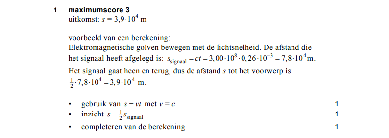
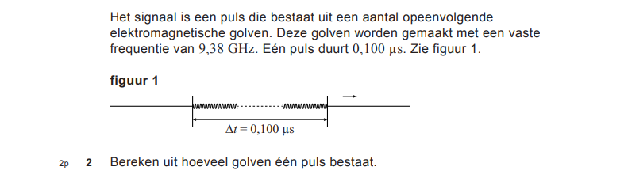
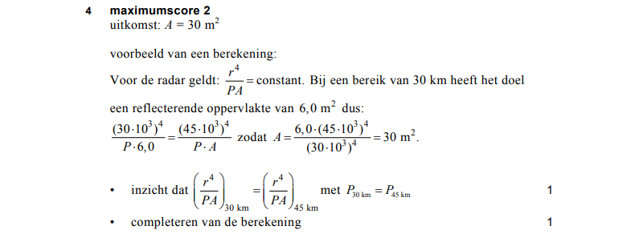

Opgave Vraag1¶

Antwoord Vraag1¶

Algemene Uitwerking Vraag1¶
Bestudeer de Algemene Uitwerking van Vraag1
import Html exposing(..)
main = text ("Afstand = " ++ (toString afstand) ++ " m")
c = 3.0*(10^8)
milli g = g * 10^(-3)
s_signaal t = c * t
s_object t = 0.5 * (s_signaal t)
afstand = s_object (milli 0.26)
-- compile-code
Opgave Vraag2¶

Antwoord Vraag2¶

Algemene Uitwerking Vraag2¶
Bestudeer de Algemene Uitwerking van Vraag1 en voeg de ontbrekende code toe aan de Algemene Uitwerking van Vraag2.
import Html exposing(..)
main = text ("Aantal golven = " ++ (toString aantalGolven))
c = 3.0 * 10^8
aantalGolven = ag (giga 9.38) (micro 0.1)
-- compile-code
Opgave Vraag 3¶
Antwoord Vraag3¶

Algemene Uitwerking Vraag3¶
Voeg de code toe voor de Algemene Uitwerking van Vraag3.
import Html exposing(..)
-- compile-code

Antwoord Vraag4¶

Algemene Uitwerking Vraag4¶
Bestudeer de Algemene Uitwerking van Vraag4.
import Html exposing(..)
main = text ("Oppervlakte = " ++ (toString oppervlakte))
kilo g = g * 10^3
opp a r1 r2 = a * (r2^4 / r1^4)
oppervlakte = opp 6.0 (kilo 30) (kilo 45)
-- compile-code